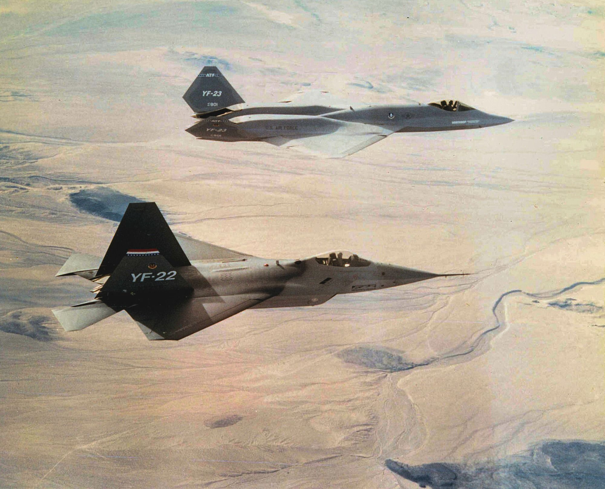
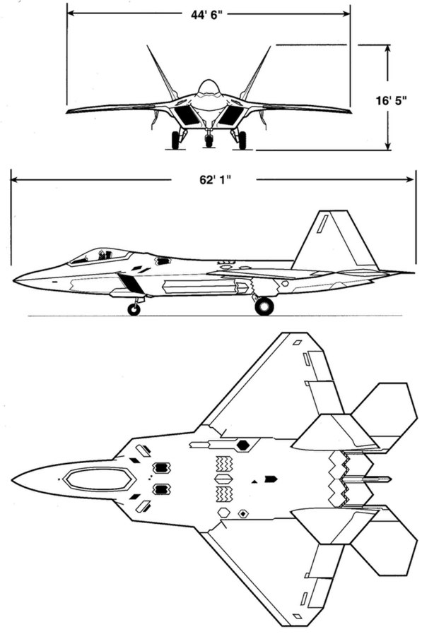
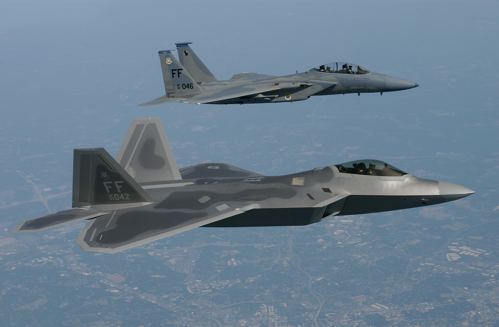
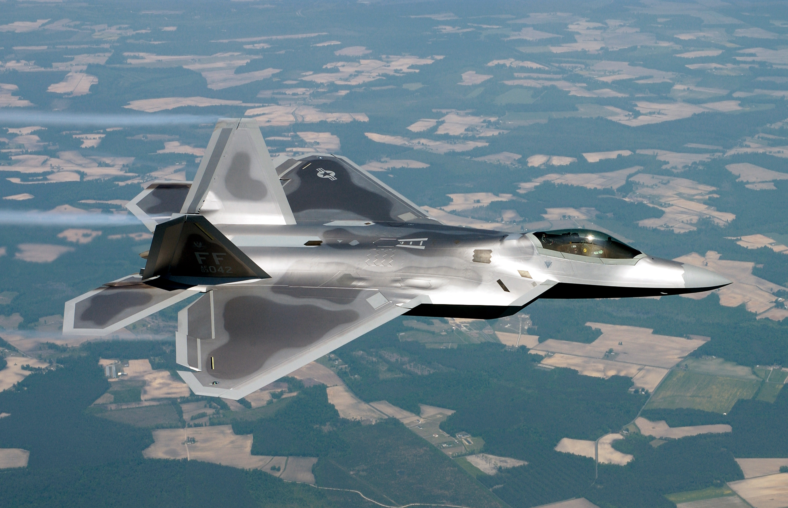
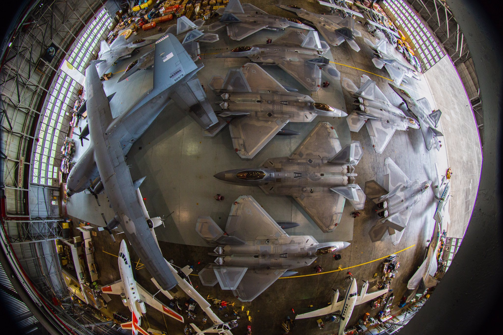
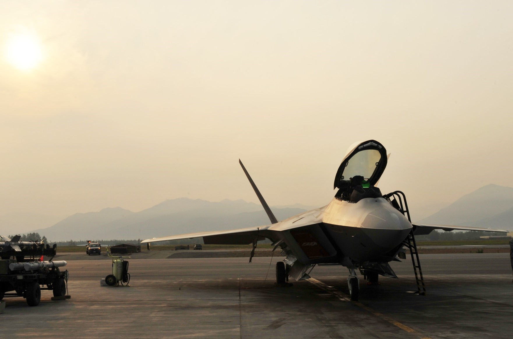
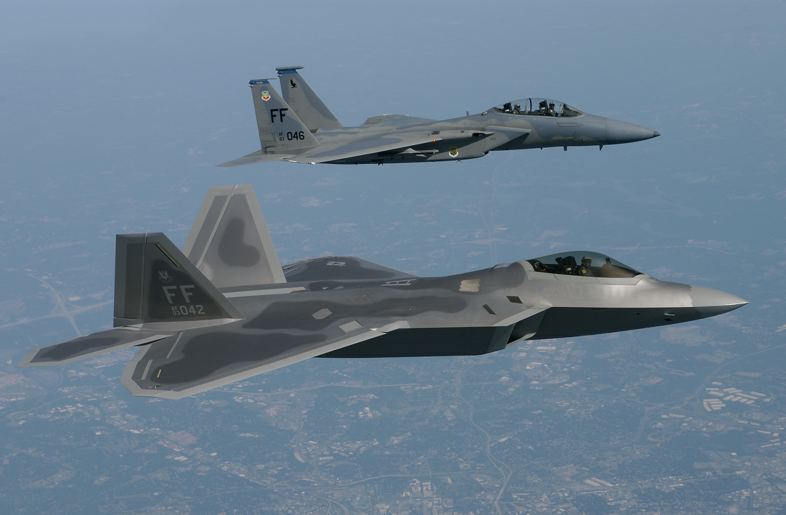
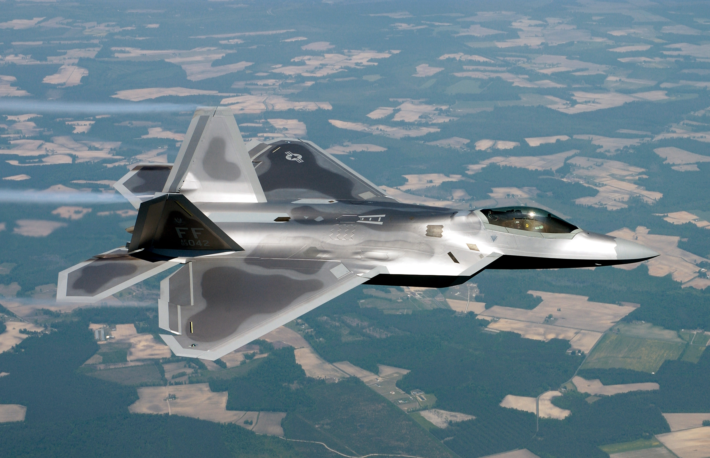
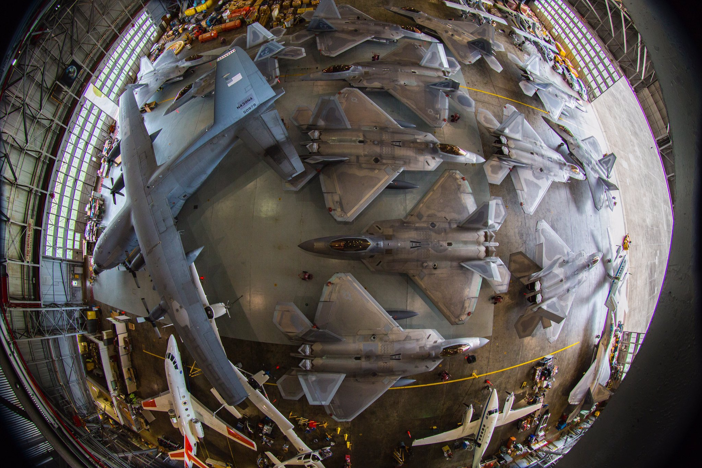
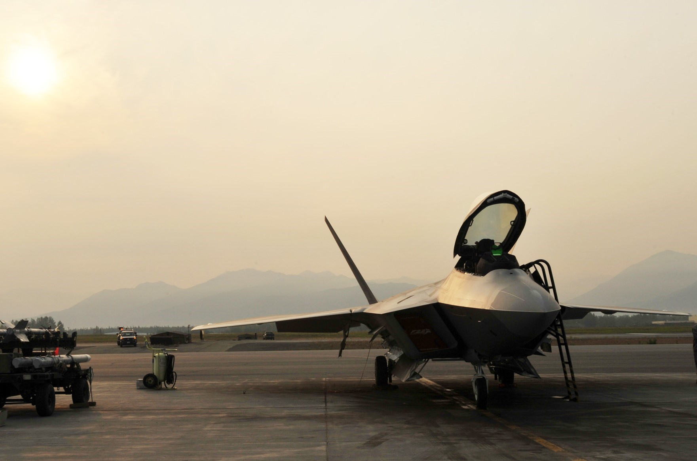

History
 In 1981, the U.S. Air Force identified a requirement for an Advanced Tactical Fighter (ATF) to replace the F-15 Eagle and F-16 Fighting Falcon. Code-named "Senior Sky", this air-superiority fighter program was influenced by emerging worldwide threats, including new developments in Soviet air defense systems and the proliferation of the Sukhoi Su-27 "Flanker"- and Mikoyan MiG-29 "Fulcrum"-class of fighter aircraft. It would take advantage of the new technologies in fighter design on the horizon, including composite materials, lightweight alloys, advanced flight control systems and avionics, more powerful propulsion systems, and most importantly, stealth technology. In 1983, the ATF concept development team became the System Program Office (SPO) and managed the program at Wright-Patterson Air Force Base. The demonstration and validation (Dem/Val) request for proposals (RFP) was issued in September 1985, with requirements placing a strong emphasis on stealth and supercruise. Owing to the immense investments required to develop the technology needed to achieve performance goals, teaming between companies was encouraged. Of the seven bidding companies, Lockheed and Northrop were selected on 31 October 1986. Lockheed, through its Skunk Works division, then teamed with Boeing and General Dynamics while Northrop teamed with McDonnell Douglas, and the two contractor teams undertook a 50-month Dem/Val phase, culminating in the flight test of two technology demonstrator prototypes, the YF-22 and the YF-23, respectively. Concurrently, Pratt & Whitney and General Electric were awarded contracts to develop the YF119 and YF120 engines respectively for the ATF engine competition.Dem/Val was focused on system engineering, technology development plans, and risk reduction over point aircraft designs; in fact, after the down-select, the Lockheed team completely changed the airframe configuration in the summer of 1987 due to weight analysis during detailed design, with notable changes including the wing planform from swept trapezoidal to diamond-like delta and a reduction in forebody planform area. Contractors made extensive use of analytical and empirical methods, including computational fluid dynamics, wind-tunnel testing, and radar cross-section (RCS) calculations and pole testing; the Lockheed team would conduct nearly 18,000 hours of wind-tunnel testing. Avionics development was marked by extensive testing and prototyping and supported by ground and flying laboratories. During Dem/Val, the SPO used the results of performance and cost trade studies conducted by contractor teams to adjust ATF requirements and delete ones that were significant weight and cost drivers while having marginal value. The short takeoff and landing (STOL) requirement was relaxed to delete thrust-reversers, saving substantial weight. As avionics was a major cost driver, side-looking radars were deleted, and the dedicated infra-red search and track (IRST) system was downgraded from multi-color to single color and then deleted as well. Space and cooling provisions were retained to allow for the later addition of these components. The ejection seat requirement was downgraded from a fresh design to the existing McDonnell Douglas ACES II. Despite efforts by the contractor teams to rein in weight, the takeoff gross weight estimate was increased from 50,000 lb (22,700 kg) to 60,000 lb (27,200 kg), resulting in engine thrust requirement increasing from 30,000 lbf (133 kN) to 35,000 lbf (156 kN) class.
Each team produced two prototype air vehicles for Dem/Val, one for each of the two engine options. The YF-22 had its maiden flight on 29 September 1990 and in-flight tests achieved up to Mach 1.58 in supercruise. After the Dem/Val flight test of the prototypes, on 23 April 1991, Secretary of the USAF Donald Rice announced the Lockheed team and Pratt & Whitney as the winners of the ATF and engine competitions. The YF-23 design was considered stealthier and faster, while the YF-22, with its thrust vectoring nozzles, was more maneuverable as well as less expensive and risky. The press speculated that the Lockheed team's design was also more adaptable to the U.S. Navy's Navalized Advanced Tactical Fighter (NATF), but by fiscal year (FY) 1992, the Navy had abandoned NATF.
Design
 The F-22's ability to operate close to the battlefield gives the aircraft threat detection and identification capability comparative with the RC-135 Rivet Joint, and the ability to function as a "mini-AWACS", though its radar is less powerful than those of dedicated platforms. This allows the F-22 to rapidly designate targets for allies and coordinate friendly aircraft. Data can be transferred to other aircraft through a BACN or via Link 16 using MIDS-JTRS. The IEEE 1394B bus developed for the F-22 was derived from the commercial IEEE 1394 "FireWire" bus system. In 2007, the F-22's radar was tested as a wireless data transceiver, transmitting data at 548 megabits per second and receiving at gigabit speed, far faster than the Link 16 system. The radio frequency receivers of the electronic support measures (ESM) system give the aircraft the ability to perform intelligence, surveillance, and reconnaissance (ISR) tasks.
The APG-77 radar has a low-observable, active-aperture, electronically scanned antenna with multiple target track-while-scan in all weather conditions; radar emissions can also be focused to overload enemy sensors as an electronic-attack capability. The radar changes frequencies more than 1,000 times per second to lower interception probability and has an estimated range of 125–150 mi (201–241 km) against an 11 sq ft (1 m2) target and 250 mi (400 km) or more in narrow beams. The upgraded APG-77(V)1 provides air-to-ground functionality through synthetic aperture radar mapping and strike modes. Alongside the radar is the ALR-94 electronic warfare system, among the most technically complex equipment on the F-22, that integrates more than 30 antennas blended into the wings and fuselage for all-round radar warning receiver (RWR) coverage and threat geolocation. It can be used as a passive detector capable of searching targets, with range (250+ nmi) exceeding the radar's, and can provide enough information for a radar lock and cue emissions to a narrow beam (down to 2° by 2° in azimuth and elevation). Depending on the detected threat, the defensive systems can prompt the pilot to release countermeasures such as flares or chaff. The MLD uses six sensors to provide full spherical infrared coverage while the advanced IRST, housed in a stealthy pod on the wing, is a narrow field-of-view sensor for long-range passive identification and targeting. To ensure stealth in the radio frequency spectrum, CNI emissions are strictly controlled and confined to specific sectors, with tactical communication between F-22s performed using the directional Inter/Intra-Flight Data Link (IFDL). Radar and CNI information are processed by two Hughes Common Integrated Processor (CIP)s, each capable of processing up to 10.5 billion instructions per second. The aircraft has also been upgraded to incorporate an automatic ground collision avoidance system (GCAS).
The F-22's ability to operate close to the battlefield gives the aircraft threat detection and identification capability comparative with the RC-135 Rivet Joint, and the ability to function as a "mini-AWACS", though its radar is less powerful than those of dedicated platforms. This allows the F-22 to rapidly designate targets for allies and coordinate friendly aircraft. Data can be transferred to other aircraft through a BACN or via Link 16 using MIDS-JTRS. The IEEE 1394B bus developed for the F-22 was derived from the commercial IEEE 1394 "FireWire" bus system. In 2007, the F-22's radar was tested as a wireless data transceiver, transmitting data at 548 megabits per second and receiving at gigabit speed, far faster than the Link 16 system. The radio frequency receivers of the electronic support measures (ESM) system give the aircraft the ability to perform intelligence, surveillance, and reconnaissance (ISR) tasks.
The APG-77 radar has a low-observable, active-aperture, electronically scanned antenna with multiple target track-while-scan in all weather conditions; radar emissions can also be focused to overload enemy sensors as an electronic-attack capability. The radar changes frequencies more than 1,000 times per second to lower interception probability and has an estimated range of 125–150 mi (201–241 km) against an 11 sq ft (1 m2) target and 250 mi (400 km) or more in narrow beams. The upgraded APG-77(V)1 provides air-to-ground functionality through synthetic aperture radar mapping and strike modes. Alongside the radar is the ALR-94 electronic warfare system, among the most technically complex equipment on the F-22, that integrates more than 30 antennas blended into the wings and fuselage for all-round radar warning receiver (RWR) coverage and threat geolocation. It can be used as a passive detector capable of searching targets, with range (250+ nmi) exceeding the radar's, and can provide enough information for a radar lock and cue emissions to a narrow beam (down to 2° by 2° in azimuth and elevation). Depending on the detected threat, the defensive systems can prompt the pilot to release countermeasures such as flares or chaff. The MLD uses six sensors to provide full spherical infrared coverage while the advanced IRST, housed in a stealthy pod on the wing, is a narrow field-of-view sensor for long-range passive identification and targeting. To ensure stealth in the radio frequency spectrum, CNI emissions are strictly controlled and confined to specific sectors, with tactical communication between F-22s performed using the directional Inter/Intra-Flight Data Link (IFDL). Radar and CNI information are processed by two Hughes Common Integrated Processor (CIP)s, each capable of processing up to 10.5 billion instructions per second. The aircraft has also been upgraded to incorporate an automatic ground collision avoidance system (GCAS).
Specification
- Crew: 1
- Length: 62 ft 1 in (18.92 m)
- Wingspan: 44 ft 6 in (13.56 m)
- Height: 16 ft 8 in (5.08 m)
- Wing area: 840 sq ft (78.04 m2)
- Aspect ratio: 2.36
- Airfoil: NACA 6 series airfoil
- Empty weight: 43,340 lb (19,700 kg)
- Gross weight: 64,840 lb (29,410 kg)
- Max takeoff weight: 83,500 lb (38,000 kg)
- Fuel capacity: 18,000 lb (8,200 kg) internally, or 26,000 lb (12,000 kg) with two 2× 600 US gal tanks
- Powerplant: 2 × Pratt & Whitney F119-PW-100 augmented turbofans, 26,000 lbf (116 kN) thrust each dry, 35,000 lbf (156 kN) with afterburner
General characteristics
- Maximum speed: Mach 2.25, 1,500 mph (2,414 km/h) at altitude
- Mach 1.21, 800 knots (921 mph; 1,482 km/h) at sea level
- Mach 1.82, 1,220 mph (1,963 km/h) supercruise at altitude
- Range: 1,600 nmi (1,800 mi, 3,000 km) or more with 2 external fuel tanks
- Combat range: 460 nmi (530 mi, 850 km) clean with 100 nmi (115 mi, 185 km) in supercruise
- 590 nmi (679 mi, 1,093 km) clean subsonic
- Ferry range: 1,740 nmi (2,000 mi, 3,220 km)
- Service ceiling: 65,000 ft (20,000 m)
- G limits: +9.0/−3.0
- Wing loading: 77.2 lb/sq ft (377 kg/m2)
- Thrust/weight: 1.08 (1.25 with loaded weight and 50% internal fuel)
Performance
- Guns: 1× 20 mm M61A2 Vulcan rotary cannon, 480 rounds
- Internal weapons bays:
- Air-to-air mission loadout:
- 6x AIM-120C/D AMRAAM
- 2× AIM-9 Sidewinder
- Air-to-ground mission loadout:
- 2× 1,000 lb (450 kg) JDAM or 8× 250 lb (110 kg) GBU-39 Small Diameter Bombs
- 2× AIM-120 AMRAAM
- 2× AIM-9 Sidewinder
- Hardpoint (external):
- 4× under-wing pylon stations can be fitted to carry weapons, each with a capacity of 5,000 lb (2,270 kg) or 600 U.S. gallon (2,270 L) drop tanks
- 4x AIM-120 AMRAAM (external)
Armament
- AN/APG-77 or AN/APG-77(V)1 radar: 125–150 miles (201–241 km) against 1 m2 (11 sq ft) targets (estimated range), more than 250 miles (400 km) in narrow beams
- AN/AAR-56 Missile Launch Detector (MLD)
- AN/ALR-94 electronic warfare system: 250 nautical miles (460 km) or more detection range for radar warning receiver (RWR)
- Integrated CNI Avionics
- MJU-39/40 flares for protection against IR missiles
Avionics
Galary
  
 